Comments of Fans
献给最好的BAU:为每个受伤的灵魂扣动扳机
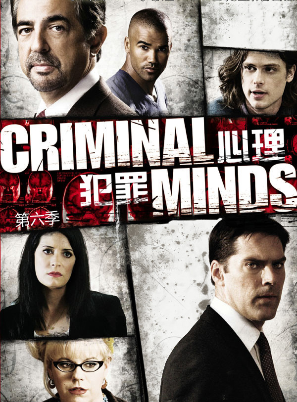
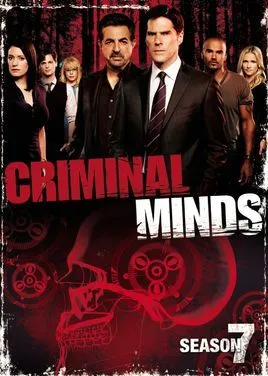
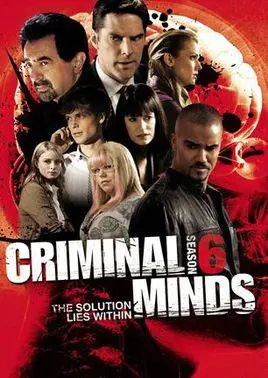
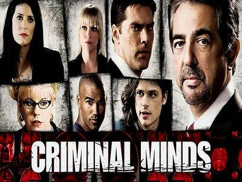
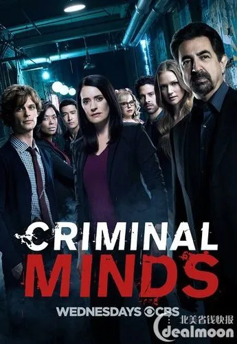
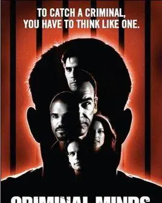
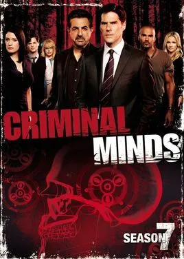
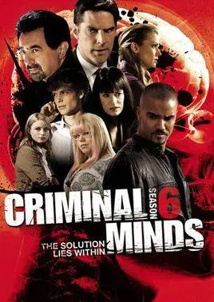
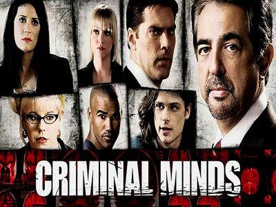
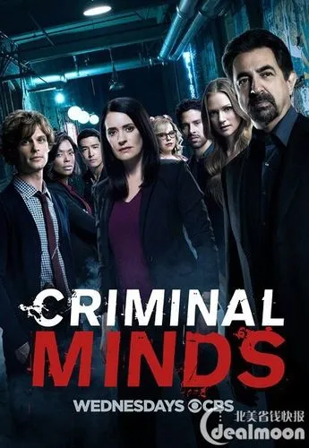
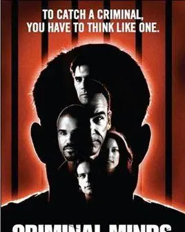
无疑此片充分表现了人性的黑暗和矛盾,是一部黑色题材电视剧。在描述一个个令人惊恐、震惊、变态、悲伤的故事后,却是这个团队的温馨、感人,以及人性的光辉。
来自豆瓣“白云在晴天”
追剧这些年,从最初被剧情吸引到后来因为不舍这TEAM 的每个人而一直坚持看下去。Gideon 忍受不了这份工作给生活带来的痛苦而离开,后来在《国土安全》再见到,一直还是停留在他是Gideon只是变老了而已。Aron 从第一集跟妻子甜蜜等待宝宝出生到后来离婚、前妻被杀害、恋爱再分手,如今一个人带着儿子生活。Reid不再是那个天才菜鸟,吸毒戒毒,爱人死去,依旧孑身一人。Morgan挺过不堪童年,依旧魅力四射。Garcia 依旧打扮的五颜六色。JJ恋爱结婚生子,离开再回来,一直是女神。Rossi接替Gideon加入,淡定老辣许多。ELLE离开,Emily 加入离开又回来又离开,Black 也走了,不知Kate会留下多久。 他们分析一个个罪犯的历史,我们见证他们的生活。当这部剧完结,大概私心会认为他们只是退休,江湖依旧流传着他们的传说。
来自豆瓣“江心”
当年开看这部剧,是一个巧合,当时我想找的是《犯罪现场》,却因缘际会看起了这部《犯罪心理》。从此魂牵梦萦,从之前一气呵成看完前几季到后来苦苦追剧,等剧,又因为等剧艰辛而回看前几季,到最后逢人便安利此剧,也算是一个扎扎实实的“真爱粉“了。
为何我对此剧爱得那么深,一言以蔽之：讲的是变态的故事,彰显的却是实实在在的人性。没错！我就是三观如此端正！但一言以蔽之是写不了文章的,所以我准备分1、2、3点来讲。
首先,感谢镜头语言的克制与冷静。我承认我从不热衷血腥、暴力、色情及恐怖镜头,但如果情节铺陈已到,该有的镜头却拦腰斩断,我也会捶胸顿足。但CM不会,它总是停在一个该停的位置,安放在一个适合安放的角度。我想,每一部剧,就像每一个人,都有其特有的“气质”。往往拥有一个“核心气质”的剧,活得都比较长。这是一部精致的犯罪剧,剧情的铺陈,办案的流程,有理有据,“原则”二字尽显：即使罪犯强奸了数名女性,但你不能以模棱两可的“自卫”之名枪杀他；纵使罪犯十恶不赦并残忍杀害你的爱妻,而你在暴怒之下活生生用拳头对其处以死刑的宣判,但最后你必须证明你这么做是因为你认为当时房间内还有你的一个小儿子需要保护却仍不免长时间被降职……这就是CM向我们展现的克制风貌,不失一丝分寸。所以,如果你用镜头来具体展现和描绘杀人手法和残忍的折磨过程,则或许可以博眼球,却必然将违和这部剧的气质。想来,想要饕餮的犯罪画面,大可不必看CM；而如果你爱CM,你会懂得它克制的美好。
再来,感谢可爱正值善良的侧写师们。据说本来这部剧设想的核心是基于真实的美国著名FBI侧写师John Douglas为原型创作的Jason Gideon这个人物,但由于演员第三季的退出,而将核心转移到了罪犯。但纵观十季,我却觉得重心一直都在侧写师们身上。但正如对犯案镜头的克制描绘,对侧写师本人的生活也经常只是寥寥数笔,却都刻画出一个个趣味盎然又讨人喜欢的人物角色,而且分摊之平均,见不到一点的偏袒。Hotch、Rossi、Morgan、Reid、JJ、Emily、Garcia、Blake、Elle、Seaver每个人都有自己的故事,却从不宣兵夺主。自Gideon走后,每一季虐一位主角的设定已经明朗,具体细节我以后将为每个人物写一篇,在此不再赘述。就一句,剧中的侧写师们每天面对世间最惨无人道的变态杀手和罪犯,却依然能秉持正义,相信爱情,与家人亲近；虽自己遭遇磨难,受尽人间伤痛,却依然乐观泰达,正向思考……在人性面临挑战时互相扶持,友爱如家人、如导师、如朋友,便是让我看了10季CM之后依旧信善的最大所在。
还有,感谢剧中刻画的罪犯们。既名为《犯罪心理》,CM对于罪犯们的心理发展轨迹可为浓墨重彩,除了一些先天的反社会人格罪犯,常常是看完一个故事,想必都不由得生出“可恨之人必有可怜之处”的感慨,有些罪犯甚至感人至深。一个女人,遇上变态杀手老公,她不能保护丈夫手下其他受害者,却搭上自己的性命来保证自己的儿子可以经历正常人的生活。最后,他们找到了她的隐情,找到了她的儿子,很快就可以让她免于死刑,但她乞求Gideon不要说出真相。千钧一发之际,两位FBI探员只是跟儿子的养父母说了句：“对不起,我们搞错了。”养父母满怀感激说出了“谢谢”。这一集的结尾,Gideon在一个音乐厅中欣赏周围毫不知情的儿子演奏大提琴,旋律悠扬舒缓,Gideon看着他,表情温暖,似乎在代替那个逝去的母亲用眼睛来爱一遍她的孩子。
世事艰辛,我们承受苦难和不幸,我们目睹罪恶与丑陋……然而,世间同样美好,我们欣赏好的音乐和文字,我们相拥庆祝,我们挽手跳支舞,我们做着说话疗伤,我们有爱人,有亲人、有朋友,我们接受陌生人的援手,我们热情帮助他人……有这样的美好对抗着那么多糟心,足矣。
来自豆瓣“worldpeace”